Des savoirs
qui prennent vie.
Interventions, démonstrations et médiation : explorer les textiles anciens à travers des expériences concrètes.
Découvrir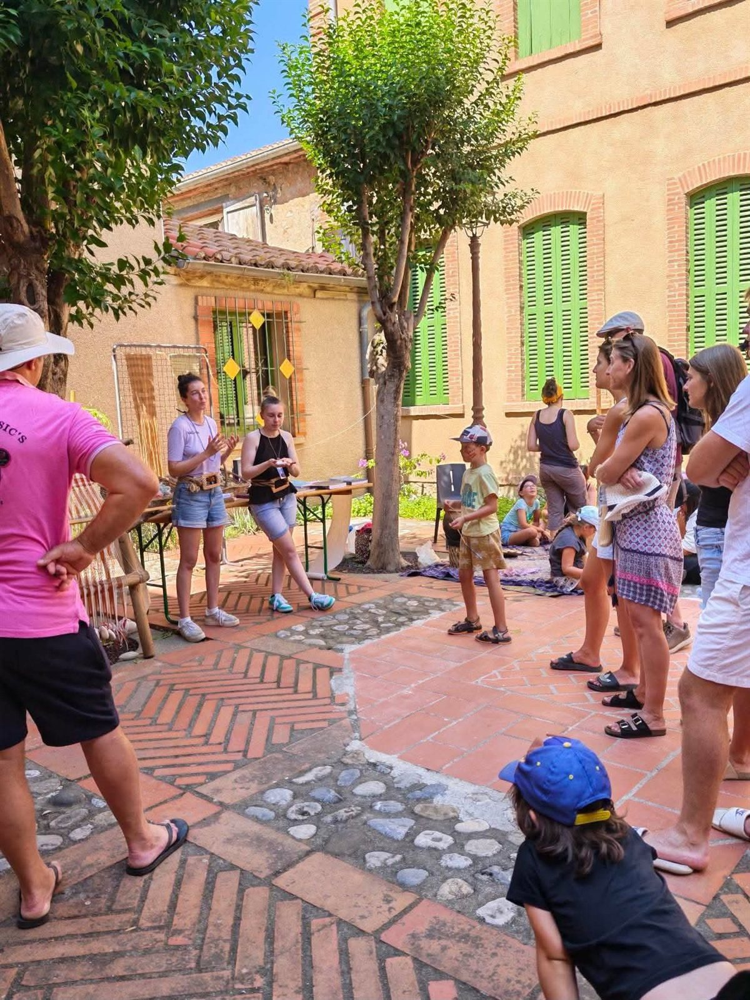
Les rencontres de l’association
L’association crée la rencontre entre les publics et les savoir-faire textiles anciens. Une intervention peut prendre place dans un établissement scolaire, un musée, un lieu culturel ou un événement.
Pour quels publics ?
- Scolaires
- centres de loisirs
- structures culturelles
- grand public

Démonstrations de savoir-faire
Observer la préparation des fibres, le filage, le tissage ou la teinture permet de comprendre les étapes de fabrication d’un textile. Les gestes et les outils deviennent des points de départ pour échanger.
Pour quels publics ?
- Visiteurs de musées
- événements culturels
- familles
- groupes

Médiation culturelle
La matière donne un accès concret à l’histoire. Notre association propose une découverte accessible, en reliant les gestes, les objets et les questions des participants.
Pour quels publics ?
Musées, établissements culturels, associations et publics scolaires.
Imaginer une intervention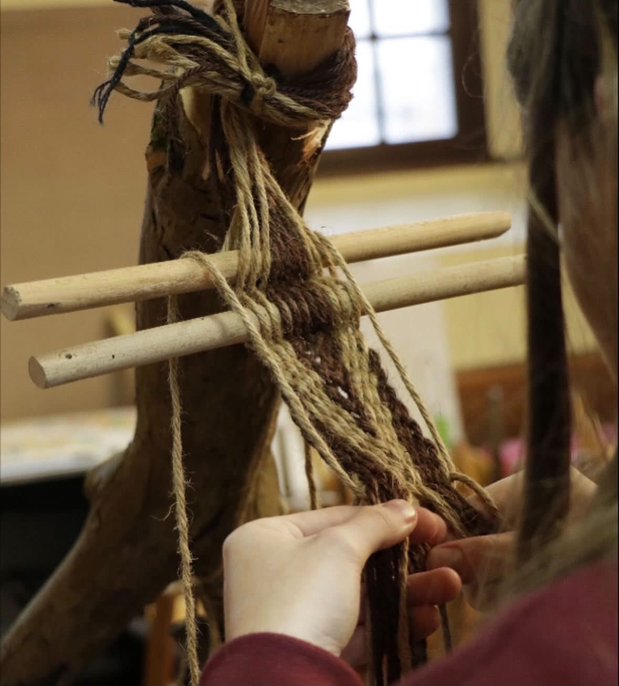
Archéologie expérimentale
Explorer un procédé, essayer un geste et observer le résultat : l’expérimentation aide à réfléchir aux techniques textiles anciennes. Elle distingue ce que l’on observe, ce que l’on suppose et ce qui reste à comprendre.
Pour quels publics ?
Publics curieux, lieux de culture et structures de médiation scientifique.
Imaginer une interventionLes savoir-faire en images
Des gestes, des matières et des échanges : un aperçu des activités de Neotisse.
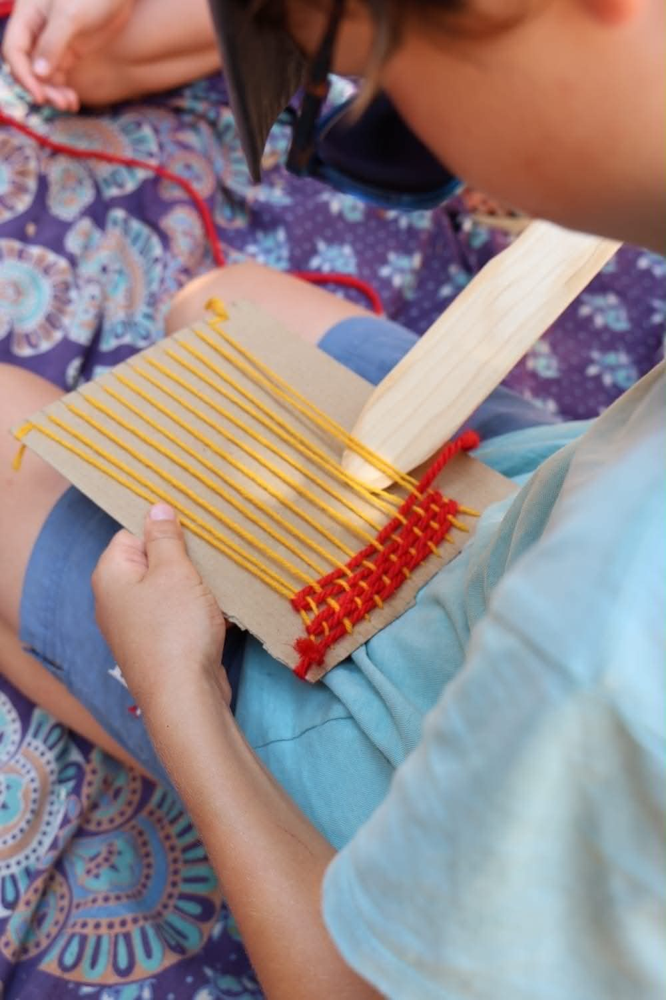
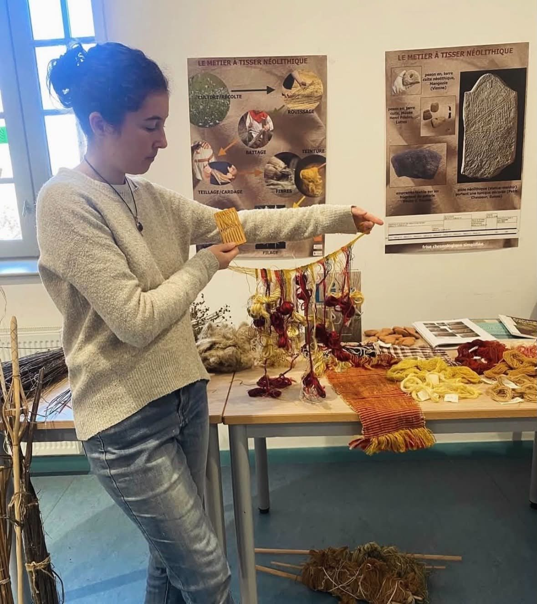
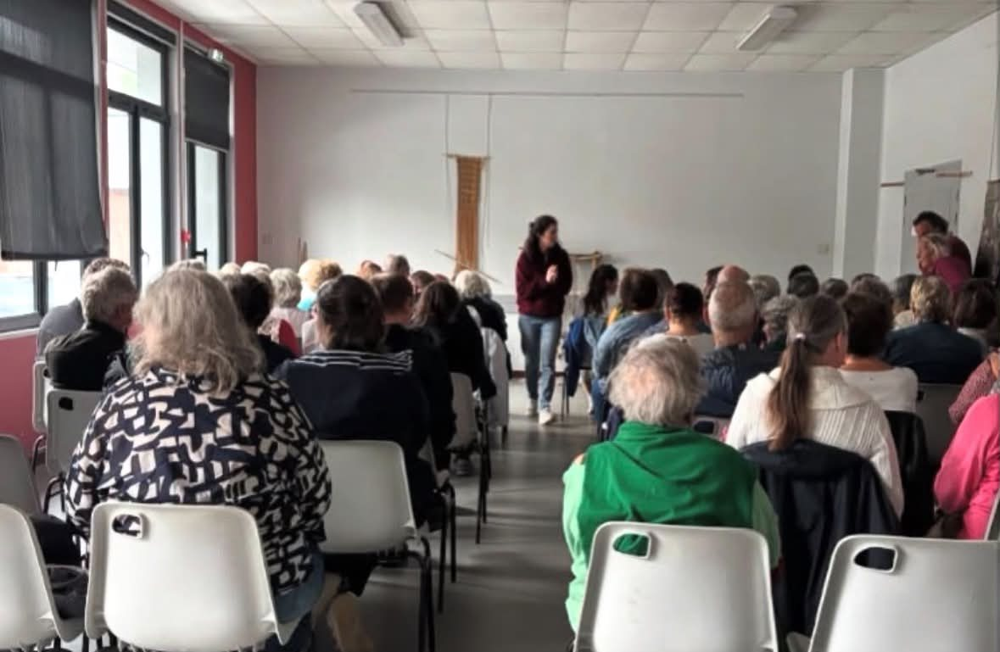
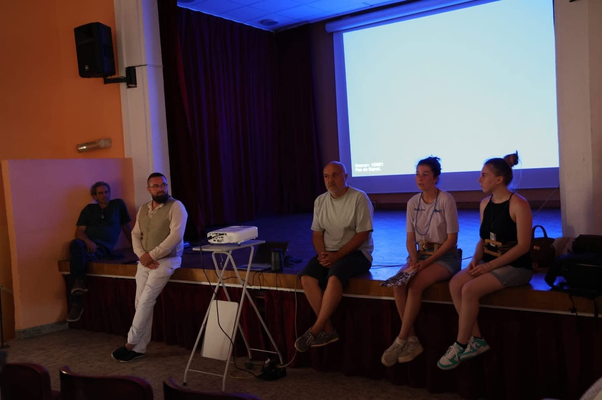
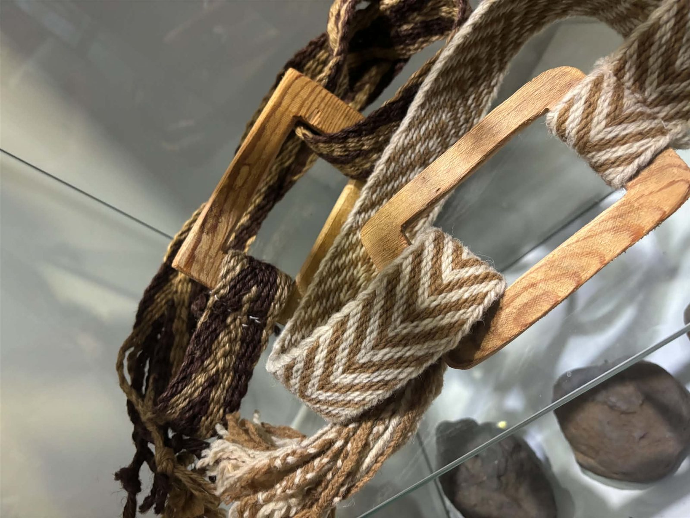
Expérimenter autour des ceintures des statues-menhirs
Le dialogue entre les représentations archéologiques et la pratique textile invite à explorer les techniques et les formes. Les photographies ci-dessous illustrent les gestes et les matières du tissage manuel.
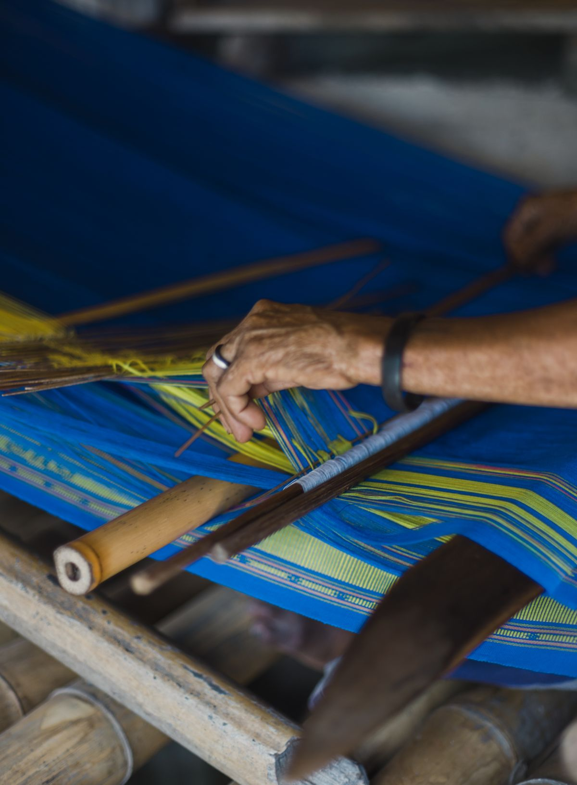
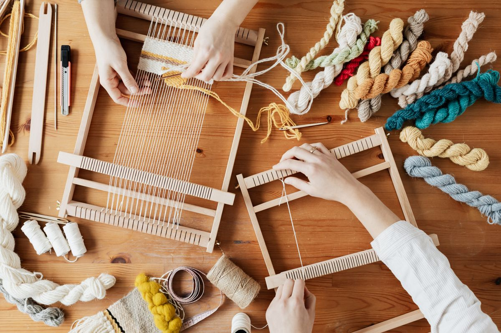
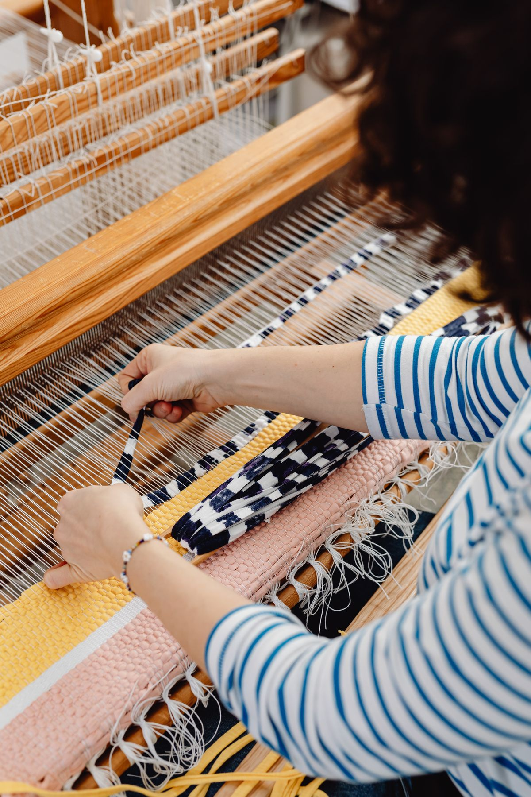
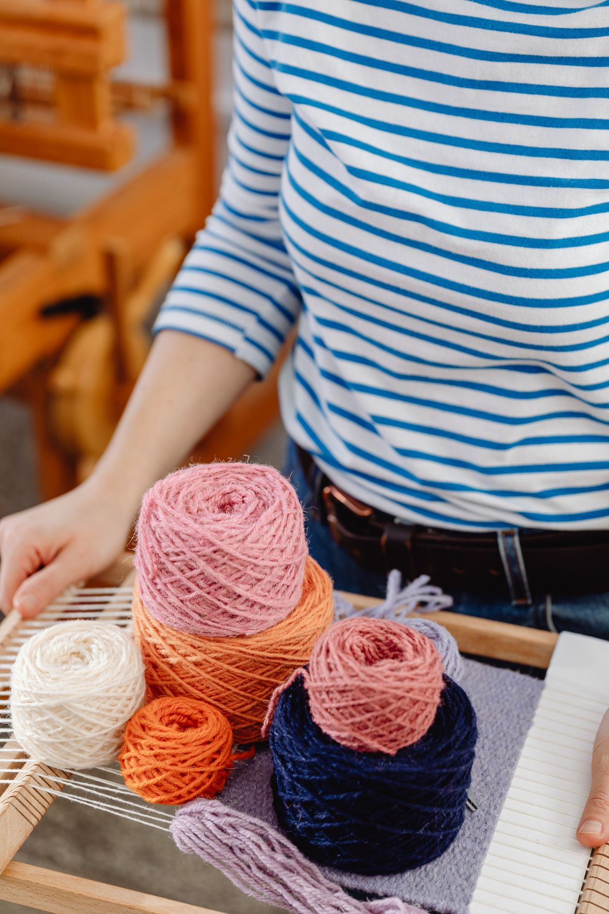